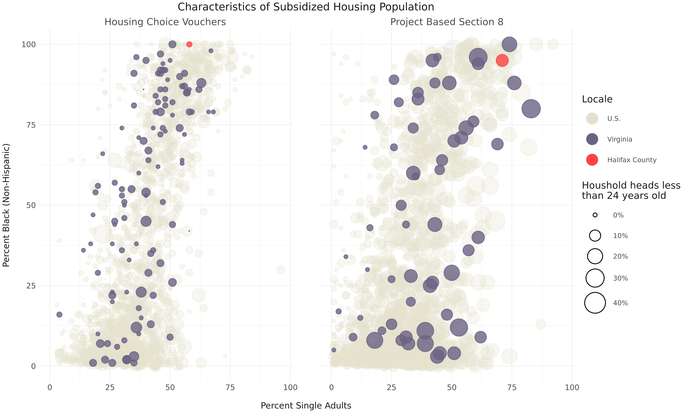

Background
Despite being previously overshadowed in the literature, housing affordability has recently begun to situate itself at the center of efforts to transition incarcerated people back into the community after release. Many now see access to affordable housing as one of the primary limiting factors for reentering individuals; an unstable living situation can severely impact employment opportunities, predispose individuals to returning to criminal activity, and hinder efforts to reestablish family relationships and friendships (Fontaine & Biess, 2012).
Housing thus enters the ecological model at multiple levels: at the policy level, eligibility for low-income housing opportunities may be limited by prior convictions (despite HUD recommendations to the contrary) (Gaitan & Brennan, 2020). At the community level, affordable housing locations can impact an individual’s access to other services that they may need, including substance abuse treatment, education, and employment opportunities. And at the relationship level, housing can serve as either a platform for successful reintegration by allowing for the re-establishment of family connections (or can present a challenge when these relationships are already frayed) (Fontaine, 2013).
To assess housing affordability in Halifax County, we relied on multiple datasets curated by the Department of Housing and Urban Development (HUD). HUD maintains datasets on low-income housing tax credit funding, characteristics of individuals living in federally subsidized housing, and administrative data used to calculate income limits for subsidized housing. While these datasets provide a picture of housing affordability in an area, they do not focus explicitly on the formerly incarcerated population, and often don’t address the unique challenges these individuals have accessing these housing opportunities.
Main Findings
- Year to year variation in funding is minimal - based on HUD calculations so does not fluctuate much (include viz)

Conclusion and Policy Implications
- Mention focus on particualrly vulnerable population
- Mention relationships with other factors (family structure)
References
Fontaine, J. (2013). Examining housing as a pathway to successful reentry: A demonstration design process. Washington, DC: Urban Institute.
Fontaine, J., & Biess, J. (2012). Housing as a platform for formerly incarcerated persons. Washington, DC: Urban Institute.
Gaitan, V., & Brennan, M. (2020). For Reentry Success and Beyond, Rental Housing Access Matters. Retrieved from https://housingmatters.urban.org/articles/reentry-success-and-beyond-rental-housing-access-matters